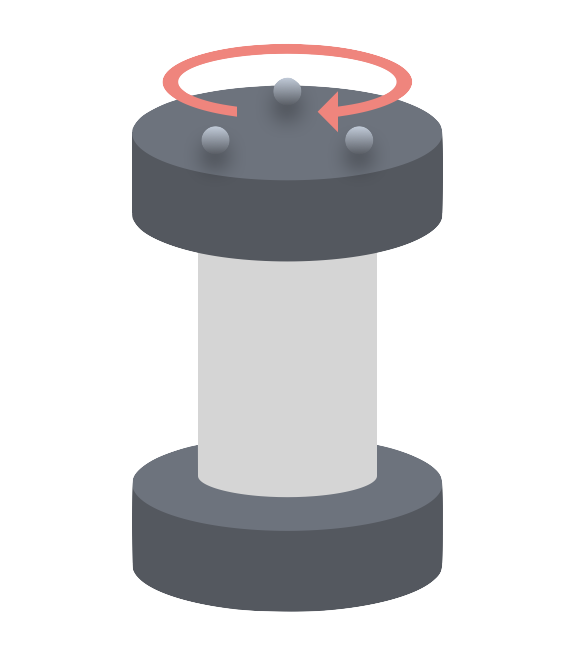

ホーム
Mocap Plus へようこそ
OptiTrackの解析ソフト「Motive」からエクスポートされたcsvファイルを添付するだけで、モーションキャプチャのデータを簡単に解析することができる統合ツールです。
お知らせ
2025/06/28
大幅アップデートを実施しました
スリップ率の算出に必要な基準速度を簡単に算出できるツールを追加し、これまでの解析ツールと併せて1つのアプリに統合しました。サイドバーから各ツールにアクセスすることができます。
データ解析ツール
CSVファイルをアップロードして、剛体の運動を解析します。
1. データ入力
動作検出の高度な設定
データ全体の振れ幅(最大値-最小値)にこの倍率を掛けた値を、静止範囲のマージンとして使用します。
3. 解析結果
平均速度の計算設定
※平均速度及び平均スリップ率は、静止範囲として設定している倍率により大きく変動します。
4. グラフ
エクスポート設定
グラフのラベル編集
速度 vs 距離
スリップ率 vs 距離
鉛直変位 vs 距離
平面移動軌跡
基準速度算出ツール
モーションキャプチャのCSVデータから車輪の基準速度を計算します。
1. データ入力
ファイルが選択されていません
ファイルを解析中...
2. パラメータ設定
3. 計算結果
算出された基準速度 (v)
0.00000000 m/s
使い方ガイド
データ解析ツール
データの収集
解析したい運動のトラッキングデータをキャプチャします。このとき、本ツールでは対象物の動作区間は、進行方向の変位データに基づいて自動で検出されます。具体的には、データ全体の振れ幅に対して非常に小さいマージン（デフォルト: 0.1%）を設定し、初期値（または最終値）からそのマージンを超えた瞬間をそれぞれ「動き出し」「動き終わり」として判定しています。このため、一方向の単純な動作に対しては高精度に検出できますが、何度も往復するような複雑な動作では、意図しない区間が検出される可能性があります。


データ入力
① CSVファイルを選択: 解析したいMotiveのCSVファイルを1つ以上選択します。
② 基準速度: 各ファイルに対応する車輪などの基準速度を入力します（スリップ率の計算に用います）。
③④ 方向の定義: 座標系における進行方向と鉛直方向を定義します。
【高度な設定】静止範囲の倍率:
対象物の動作区間は、進行方向の変位データに基づいて自動で検出されます。具体的には、データ全体の振れ幅に対して非常に小さいマージン（デフォルト: 0.1%）を設定し、初期値（または最終値）からそのマージンを超えた瞬間をそれぞれ「動き出し」「動き終わり」として判定しています。このため、一方向の単純な動作に対しては高精度に検出できますが、何度も往復するような複雑な動作では、意図しない区間が検出される可能性があります。
解析対象の剛体を選択
ファイル内に含まれる剛体の一覧が表示されるので、解析したいものをチェックします。凡例名はグラフのラベルとして使用されます。
解析開始
ボタンを押すと解析が実行されます。
結果確認と調整
- 平均速度、スリップ率が表示されます。
- 微小速度のフィルタリング機能で、静止状態に近い微小な動きを平均速度の計算から除外できます。
- グラフのラベルを編集したり、スタイル（カジュアル/フォーマル）を変更できます。
- 各グラフはPNGまたはPDF形式でダウンロードできます。
基準速度算出ツール
データの収集
基準速度を算出したい回転系について、あらゆる負荷がかからない状態で固定して回転させたトラッキングデータをキャプチャします。例えば2輪ローバであれば、片方の車輪が鉛直方向を向くように立てかけて、上側の車輪にマーカをつけ、旋回動作をさせて上側車輪だけを回すことで無負荷の回転データを得ることができます。
データ入力
解析したいMotiveのCSVファイルを1つ選択します。
パラメータ設定
② 車輪の剛体を選択: ファイル内の剛体から、回転を計測したい車輪を選択します。
③ 車輪の半径 (cm): 選択した車輪の半径をセンチメートル単位で入力します。
④ 車輪の回転軸: 車輪がどの軸周りに回転しているかを選択します。
計算開始
ボタンを押すと、データから回転の周期を算出し、基準速度（周速度）を計算します。
結果確認
計算された基準速度が表示され、結果をクリップボードにコピーできます。
このツールについて
基本情報
更新履歴
- 2025-06-28: 基準速度の算出ツールを作成、データ解析ツールに統合。
- 2025-06-21: データ解析ツールの初期リリース。
注意事項・免責事項
- 本ツールは、OptiTrackの解析ソフト「Motive」からエクスポートされたCSVファイルに最適化されています。
- データ処理は全てブラウザ内で完結し、添付したデータが外部に送信されることはありません。
- 本ツールの利用によって生じた直接的または間接的な損害について、製作者は一切責任を負いません。
- 本ツールの作成にあたっては、複数のLLMを利用しています。
© 2025 SAITO Minoru.